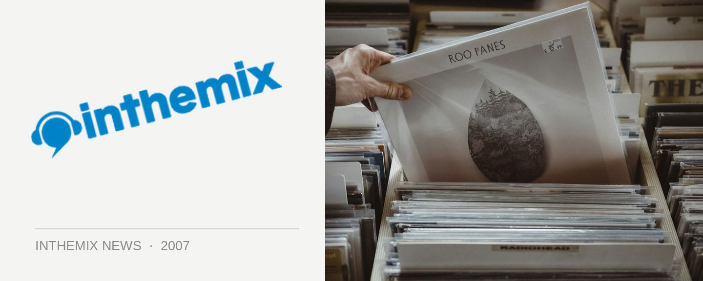

Subservice goes local
After a string of successful parties featuring some of the country’s best underground DJ talent from interstate, the Subservice crew will be putting the spotlight back on Sydney at their next event. They’re keen to showcase what our city has to offer and best of all, they’re making it a free event as a way of saying thank you to those who have already jumped on board as loyal followers (as well as providing new punters with a chance to check it out).
To register for free entry, send your full name and email address to register@subservice.com.au, otherwise it’s $10 on the door. DJs for the evening will be Tim Culbert, Synik and The Subservice DJs and they’ll be dropping the expected twisted blend of techno, breaks, minimal, acid, house and progressive.
The next Subservice takes place next Friday August 3rd at The Civic, 10pm to late. Register for free entry!